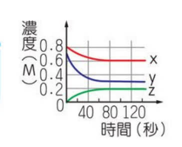
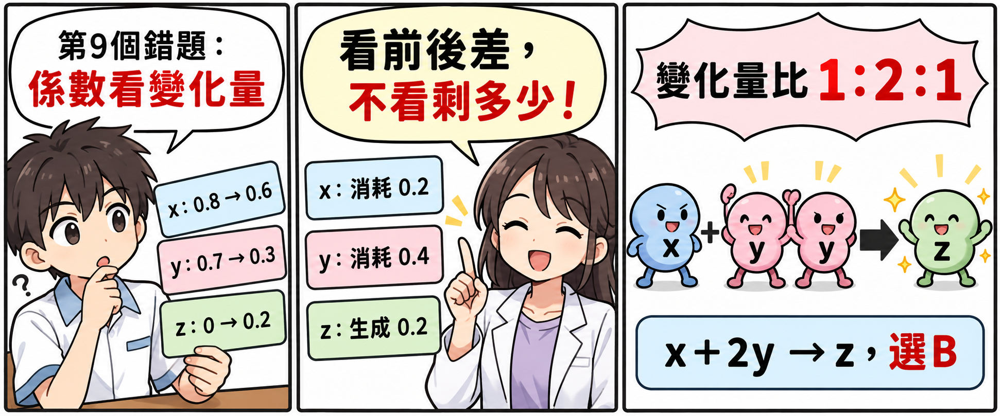
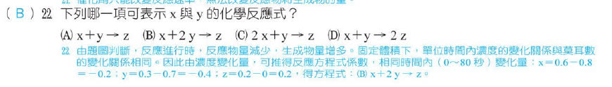

分享原卷｜第 22 題
完整原題
作答所需文章／材料
在密閉容器內，置入x與y兩種氣體反應生成一種z氣體，右圖表示反應物與產物的濃度隨反應時間的變化關係。試回答第21、22題。
下列哪一項可表示x與y的化學反應式？
(A) x＋y → z
(B) x＋2y → z
(C) 2x＋y → z
(D) x＋y → 2z
先想一想，再查看答案、解說與原圖
原卷作答：A；使用者於原對話提供A→B
正確答案：B。同一段時間內x消耗0.2 M、y消耗0.4 M、z生成0.2 M，比例1：2：1。
逐項解析
| 選項與原句 | 判讀 | 句意與判斷理由 |
|---|---|---|
| (A) x＋y → z | 不選 | 此式要求x、y消耗量為1：1，但原圖是0.2：0.4＝1：2。 |
| (B) x＋2y → z | 應選 | 同一段時間內x消耗0.2 M、y消耗0.4 M、z生成0.2 M，比例1：2：1。 |
| (C) 2x＋y → z | 不選 | 把x與y的消耗比例顛倒了。 |
| (D) x＋y → 2z | 不選 | z的生成量與x消耗量相同，不是x的一倍之外再多一倍。 |
詳細說明與解題步驟
先確認縱軸是濃度M，橫軸是時間秒；在同一段0～80秒內讀取前後差，不拿剩餘濃度當係數。
x：0.8降到0.6 M，消耗0.2 M。
y：0.7降到0.3 M，消耗0.4 M。
z：0升到0.2 M，生成0.2 M。
定容下，物質的量變化比等於濃度變化量比，0.2：0.4：0.2＝1：2：1，故反應式為x＋2y→z，選B。
80秒後三條線趨於水平，表示濃度維持穩定；不能把0.6：0.3：0.2當成反應係數。原先照片裁掉必要曲線圖，這次從原對話上傳的教用PDF取回完整原圖後才加入。

核對註記：已核對題幹、全部選項與必要材料；教材對應課次未確認，歸綜合。 冊次／章節依原對話教用PDF第四冊單元9核對。
原圖（僅本題）
